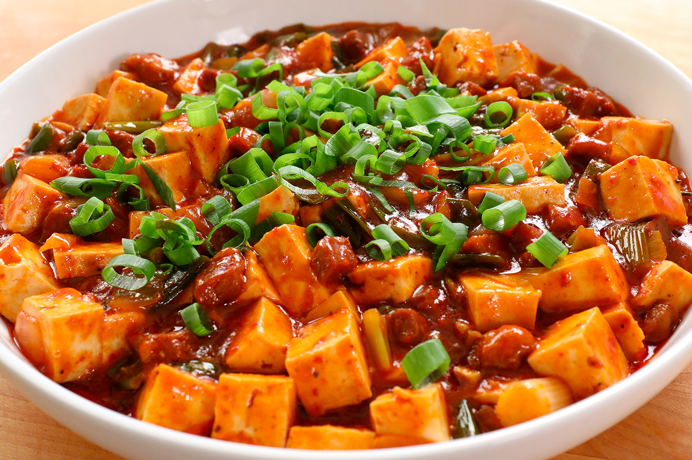
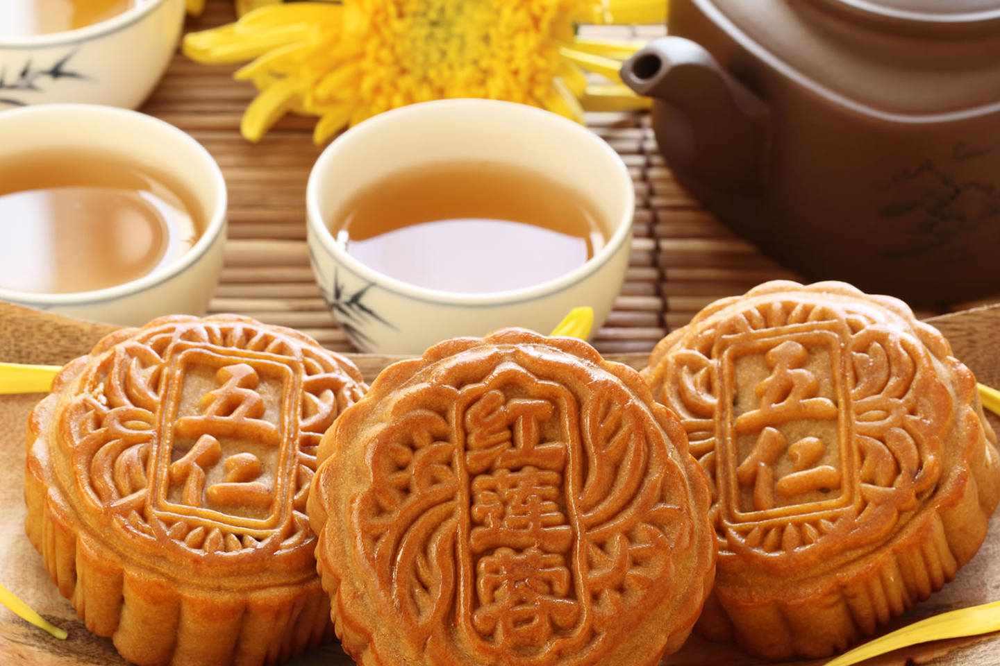

¿Siempre habías querido saber cómo se hace la receta del pato Pekín pero nunca has conseguido averiguarlo? ¡Pues no busques más!, porque gracias a RecetasGratis en esta ocasión descubrirás cómo elaborar un pato laqueado a la pekinesa con su correspondiente salsa, su guarnición de vegetales y su tortitas para envolverlo.
Pollo Gong Bao es un plato clásico de la cocina Sichuan, originario de la provincia de Sichuan en la parte central al oeste de China. El plato se nombra en honor de Ding Baozhen (1820–1886), un oficial de la época tardía de Dinastía Qing. Nacido en Guizhou, Ding sirvió como funcionario principal de la provincia de Shandong y como gobernador de la provincia de Sichuan.

Los Jiaozi consisten en carne y/o verdura picada envuelta por una masa fina que se suele sellar con los dedos. El contenido puede ser tanto dulce como salado. Los rellenos más conocidos incluyen carne picada de cerdo, ternera, cordero y pollo; pescado o gambas… que normalmente se mezclan con otras verduras como repollo chino, cebollino, apio, setas…


El mapo doufu o mapo tofu es un plato chino popular originario de la provincia de Sichuan. Es una combinación de tofu en salsa picante de guindilla y judía, normalmente clara, aceitosa y roja brillante, a menudo cubierto con carne picada, usualmente cerdo o ternera. Existen variantes con otros ingredientes como castaña de agua, cebolla, otra verdura u hongo oreja de madera, que no suelen considerarse auténticas de Sichuan.

¿Siempre habías querido saber cómo se hace la receta del pato Pekín pero nunca has conseguido averiguarlo? ¡Pues no busques más!, porque gracias a RecetasGratis en esta ocasión descubrirás cómo elaborar un pato laqueado a la pekinesa con su correspondiente salsa, su guarnición de vegetales y su tortitas para envolverlo.